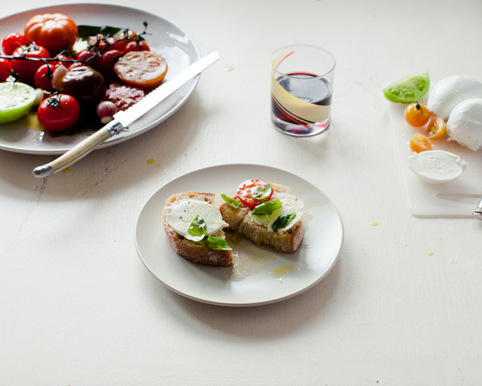

Great quality tomatoes don’t really need any help, but a slow poaching in extra virgin olive oil
and plenty of fresh herbs is not a bad way to add to some already excellent flavours. Be choosy
with the quality of tomato, and try some of the heirloom variety if they’re in season. Serve with
more fresh herbs, buffalo mozzarella, and crusty sourdough.

Lay the tomatoes in a baking dish, top up with oil and throw in plenty of herbs, garlic and a
couple of fresh bay leaves. Cook for roughly 2 hours at 60 ºC, or until the tomatoes are soft but
still holding their shape. Arrange with bread, cheese and, of course, red wine.